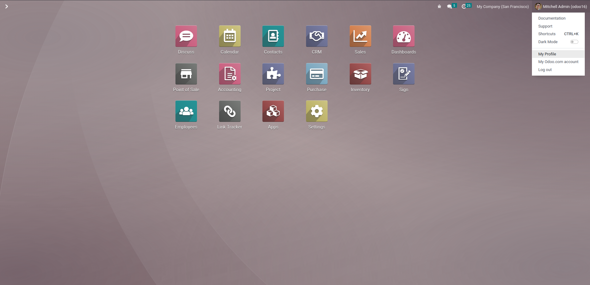
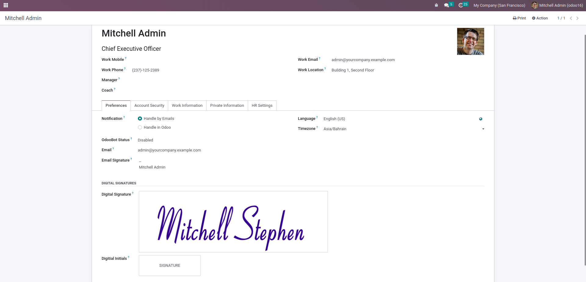
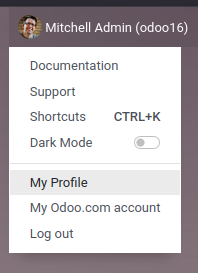
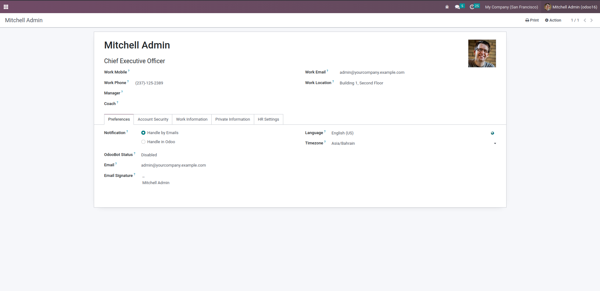

Enable users to add and manage their digital signatures directly from their profile for seamless document signing.




User Digital Signature Profile is a powerful enhancement to Odoo's user management system that enables users to add and manage their digital signatures directly from their profile settings. In standard Odoo, users cannot add their signatures to their profile, which means they need to sign documents manually every time. This module solves that problem by providing a dedicated interface for signature management. With this module, users can:
This module significantly improves user experience and productivity by streamlining the document signing process. Whether it's approving purchase orders, signing contracts, or authorizing expenses, users can now complete these tasks faster with their pre-saved signatures.
✅ Easy Installation Process:
ℹ️ Post-Installation Notes:
Follow these simple steps to add your digital signature:
Your signature can be easily managed and updated:
Once saved, your signature can be used across Odoo:
Eliminate the need to sign documents manually every time. Users can save their signature once and reuse it across all documents, dramatically reducing time spent on document processing.
Users can manage their own signatures without requiring administrator intervention, giving them autonomy and reducing IT support requests.
Streamline approval workflows and document signing processes, enabling faster business operations and reduced bottlenecks.
Maintain consistent and professional-looking signatures across all company documents, enhancing brand image and document credibility.
🚀 Planned Features and Enhancements:
For support and assistance, contact us at admin@tecpill.com or call us at +973 38 07 04 04
Visit our website: www.tecpill.com